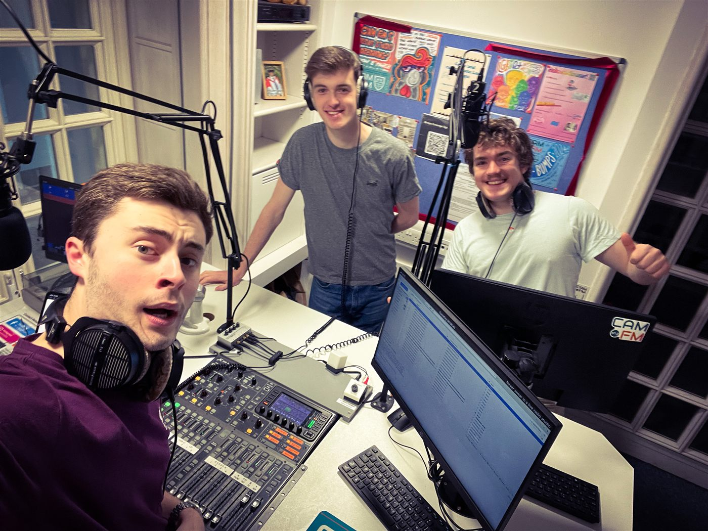

Song requests, feedback, a bass player I absolutely need to know about — all welcome.
...

The quickest way to reach me — requests, feedback, or just to say what you thought of this week's show.
Prefer email? Reach the show directly.